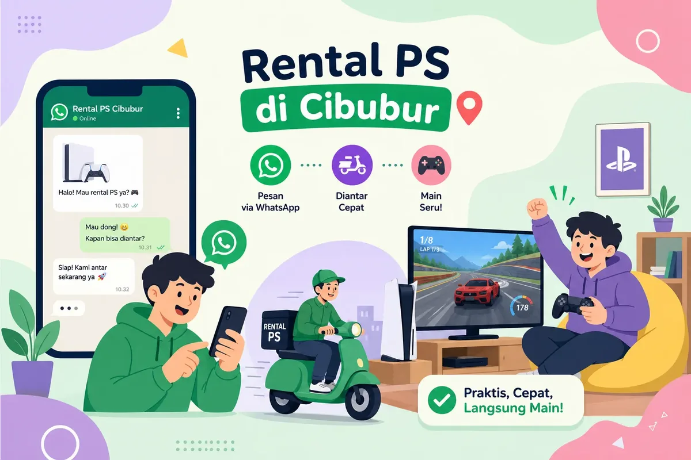

Akhir pekan tiba, anak-anak sudah minta main game, atau teman-teman mau nongkrong dan butuh hiburan di rumah. Masalahnya: tidak punya konsol dan malas keluar. Solusinya, cari rental PS Cibubur yang mengantarkan konsol langsung ke depan pintu rumah.

Eboni Space adalah layanan sewa PlayStation berbasis di Cileungsi yang melayani pengantaran PS4 dan PS5 ke Cibubur dan sekitarnya. Kamu tidak perlu datang ke toko, tidak perlu antre, dan tidak perlu membawa perangkat sendiri. Artikel ini merangkum cara pesannya lewat WhatsApp, kisaran biaya, pilihan game, dan promo yang bisa kamu manfaatkan.
Rental PS Cibubur yang mengantarkan konsol ke rumah
Tidak semua penyewa PlayStation melayani pengantaran. Sebagian masih berupa toko fisik yang mengharuskan pelanggan datang sendiri. Dengan layanan antar, kamu bisa memesan dari rumah tanpa memikirkan transportasi atau parkir.
Dari Cileungsi ke Cibubur
Eboni Space mengantar PS4 dan PS5 ke wilayah Cibubur, termasuk koridor Transyogi, Kota Wisata, Cikeas, Karanggan, Jatisampurna, dan Setu. Pengantaran dilayani sesuai ketersediaan unit dan jadwal kurir, jadi pemesanan mendadak pun bisa ditangani selama stok ada dan jadwal memungkinkan.
Ini bukan toko yang perlu dikunjungi. Konsol datang ke rumahmu dalam keadaan siap dipakai, dan setelah masa sewa habis, pengembalian diatur bersama admin.
Yang perlu dikonfirmasi sebelum memilih rental mana pun
Sebelum memesan, pastikan beberapa hal ini: jenis konsol yang tersedia, jumlah stik, game yang bisa dipilih, biaya antar ke lokasimu, durasi sewa, dan jaminan yang diminta. Harga dan stok bisa berubah, jadi selalu cek informasi terbaru langsung ke admin.
Pengantaran tersedia 24 jam sesuai ketersediaan. Artinya kamu bisa memesan kapan saja, tetapi jadwal antar tetap mengikuti stok unit dan kurir. Kirim pin lokasi Google Maps ke admin supaya jangkauan dan perkiraan waktu antar bisa dicek dengan akurat.
Harga rental PS untuk Cibubur
Punya gambaran harga sebelum menghubungi admin membantu kamu menyiapkan anggaran. Berikut daftar harga sewa PS4 Eboni Space yang sudah termasuk diskon 15% (sesuai periode promo):
| Durasi | Stik | Harga PS4 |
|---|---|---|
| 3 jam | 2 stik | Rp17.850 |
| 6 jam | 2 stik | Rp34.000 |
| 12 jam | 2 stik | Rp59.500 |
| 24 jam | 2 stik | Rp102.000 |
| 2 hari | 3 stik | Rp195.500 |
| 3 hari | 3 stik | Rp276.250 |
Untuk harga PS5, tanyakan langsung ke admin saat booking. Daftar lengkap dan ketentuannya ada di halaman harga sewa PS Eboni Space. Harga akhir dan ketersediaan unit selalu dikonfirmasi admin sebelum kamu transfer.
Biaya antar dari Cileungsi ke Cibubur
Gratis ongkir berlaku untuk tujuan dalam radius 7 km. Karena Cibubur cukup luas dan tersebar di beberapa kota, jaraknya berbeda-beda:
| Wilayah | Perkiraan jarak | Ongkir |
|---|---|---|
| Citra Gran Cibubur | ±6,3 km | Gratis (radius 7 km) |
| Kranggan | ±8,1 km | Dikonfirmasi admin |
| Pondok Ranggon (Cipayung) | ±9,6 km | Dikonfirmasi admin |
| Cibubur Junction | ±9,9 km | Dikonfirmasi admin |
Jarak di atas adalah jarak garis lurus dari titik Eboni Space; ongkir final dihitung admin dari pin lokasimu. Faktor lain yang memengaruhi total biaya: durasi sewa, jenis konsol, dan tambahan TV 32 inci bila di rumah belum ada layar (mengikuti ketentuan minimum sewa). Untuk sewa yang diantar ke rumah, jaminan cukup KTP.
Cara pesan rental PS Cibubur lewat WhatsApp dalam 4 langkah
Seluruh proses bisa diselesaikan lewat WhatsApp, tanpa formulir daring atau pendaftaran akun. Pastikan kamu menghubungi nomor resmi yang tertera di situs Eboni Space.
Kirim MENU ke WhatsApp bot
Ketik MENU ke WhatsApp bot Eboni Space atau tekan tombol booking di halaman ini. Bot langsung membalas tanpa menunggu admin.
Pilih konsol, paket, dan TV
Pilih PS4 atau PS5, paket jam sewa, dan tambahan TV bila di rumah belum ada layar dengan port HDMI.
Simpan kode booking, kirim pin Cibubur
Setelah kode booking muncul, admin menghubungi kamu. Kirim pin lokasi Google Maps, tanggal, jam mulai, dan game yang ingin dimainkan. Admin mengonfirmasi unit, harga, ongkir, dan jadwal antar.
Terima konsol dan main
Unit diantar sesuai jadwal yang disepakati. Siapkan KTP sebagai jaminan, colokkan ke TV, dan langsung main.
Semakin cepat jadwal dikunci, semakin kecil risiko unit sudah dipesan orang lain, terutama untuk akhir pekan. Panduan lebih detail ada di artikel cara booking via WhatsApp bot.
Pilih game sebelum konsol dikirim
Memilih game sejak awal membuat sewa jauh lebih memuaskan. Jangan sampai konsol sudah tiba tapi game yang cocok tidak ada. Cek koleksi game PS4, PS5, dan Nintendo Switch lewat fitur pencarian game di beranda, atau sebutkan judulnya ke admin.
Game untuk berbagai suasana
- Nongkrong bareng teman: EA Sports FC 26, eFootball, Need for Speed, atau Tekken 8 (khusus PS5) yang seru dimainkan bergantian.
- Acara anak dan keluarga: Marvel's Spider-Man: Miles Morales, Crash Team Racing, atau It Takes Two yang ringan dan menyenangkan.
- Eksklusif generasi baru: ASTRO BOT di PS5. Kalau incaranmu game seperti ini, pastikan memilih unit PS5.
Jika judul tertentu sedang tidak tersedia, admin biasanya bisa menyarankan alternatif yang setara. Rekomendasi lain ada di artikel game PS4 & PS5 untuk mabar.
Promo yang bikin sewa PS lebih hemat
- Happy Weekend PS4: sewa PS4 dari Jumat pukul 16.00 sampai Minggu pukul 23.00 dengan harga promo Rp200.000.
- Diskon 15%: potongan harga sesuai periode promo dan ketersediaan unit (harga di tabel di atas sudah termasuk diskon ini).
Promo tidak dapat digabung satu sama lain, dan biaya antar menyesuaikan lokasi. Tanyakan promo yang sedang berjalan sejak awal chat, dan pastikan potongan sudah tercantum sebelum kamu transfer. Tips hemat lainnya ada di artikel sewa PS murah di Cileungsi.
Sewa PS untuk ulang tahun dan kumpul-kumpul
Eboni Space juga melayani sewa untuk ulang tahun anak atau kumpul bersama teman di Cibubur. Sampaikan tanggal dan jam acara, lokasi, jumlah peserta, pilihan PS4 atau PS5, jumlah unit, dan kebutuhan TV agar paketnya bisa disesuaikan. Lihat juga panduan sewa PS untuk acara ulang tahun.
Sekarang giliran kamu
Menyewa PlayStation di Cibubur dengan layanan antar ke rumah tidak lagi rumit: empat langkah lewat WhatsApp, konfirmasi dari admin, lalu konsol bisa tiba di hari yang sama sesuai ketersediaan unit dan jadwal kurir.
Stok unit terbatas dan jadwal akhir pekan sering cepat penuh. Jangan sampai malam Minggu tiba tapi unit sudah habis dipesan. Kirim MENU ke WhatsApp bot Eboni Space sekarang dan amankan jadwal rental PS Cibubur kamu lebih awal.
FAQ rental PS Cibubur
Bagaimana cara pesan rental PS di Cibubur?
Kirim pesan MENU ke WhatsApp bot Eboni Space, pilih PS4 atau PS5, pilih paket jam dan TV bila perlu, lalu simpan kode booking. Admin akan menghubungi Anda untuk pin lokasi Cibubur dan jadwal antar.
Apakah pengantaran ke Cibubur gratis ongkir?
Gratis ongkir berlaku untuk tujuan dalam radius 7 km, misalnya sisi Citra Gran Cibubur (±6,3 km). Untuk lokasi yang lebih jauh seperti Kranggan atau Cibubur Junction, biaya antar dihitung admin dari pin lokasi Anda sebelum booking.
Berapa harga sewa PS4 untuk Cibubur?
Harga PS4 setelah diskon 15% mulai Rp17.850 untuk 3 jam dan Rp102.000 untuk 24 jam dengan 2 stik. Harga PS5 dan harga akhir dikonfirmasi admin saat booking.
Apa jaminan untuk sewa PS yang diantar ke rumah?
Untuk unit yang diantar ke rumah, jaminan cukup KTP.
Apakah bisa memilih game sebelum konsol dikirim?
Bisa. Cek koleksi game PS4 dan PS5 di website atau sebutkan judul yang diinginkan saat booking agar admin dapat memastikan ketersediaannya.